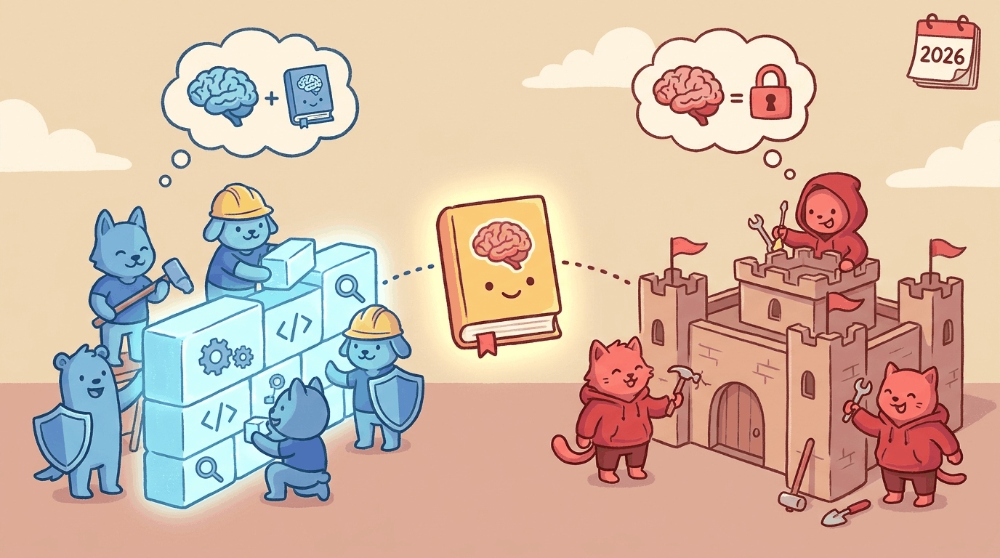

SOC automation, code review, threat intel, defense and offense. What 2026 settled about LLMs in blue-team and red-team work.

capturing the theme: SOC automation, code review, threat intel, defense and offense. What 2026 settled about...
Big Picture
Cybersecurity is the only LLM application area where attackers and defenders are both adopting the technology at scale simultaneously. The defender side wins at scale because of mature SIEM/SOAR infrastructure to plug into. The attacker side wins at velocity because there is no compliance team slowing them down. The 2026 cybersecurity LLM playbook is fundamentally about whether you can deploy LLM automation faster than your adversaries can. Section 55.1 covers the blue-team use cases. Section 55.2 covers the red-team uses that defenders must understand. Section 55.3 covers the LLM-specific attack surface (OWASP Top 10, MITRE ATLAS). Section 55.4 covers the trust-boundary architecture. Section 55.5 closes with the vendor landscape, and Section 55.6 is the longer production-pattern companion.
Cybersecurity established the trust-boundary pattern that Chapter 56 on government extends to a setting where the auditability and accountability requirements are imposed by administrative law rather than by an examination regime.